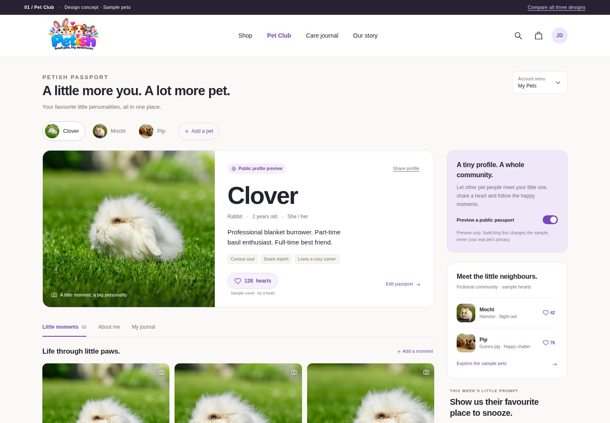
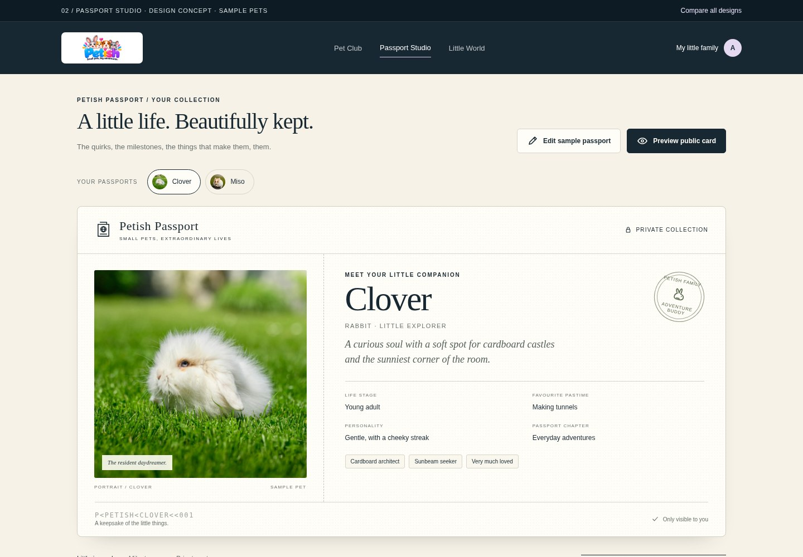
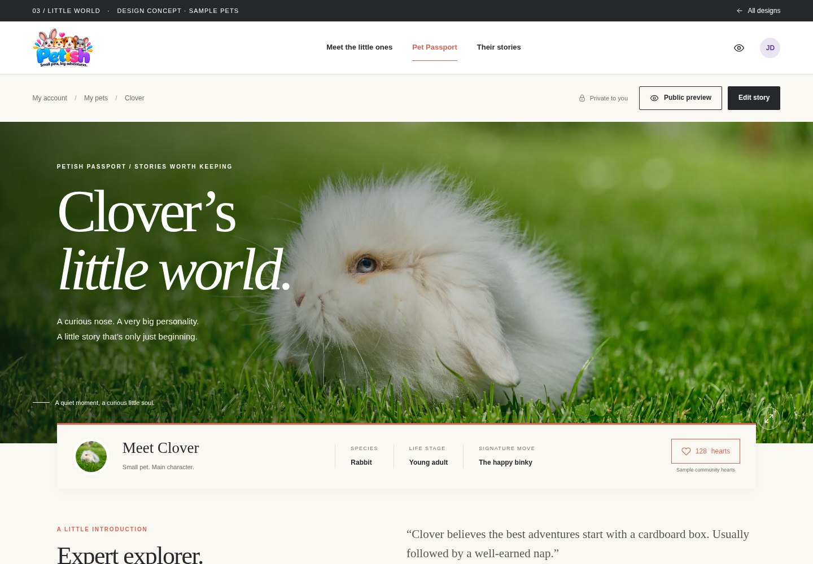

01 / SOCIALRecommended for community
Pet Club
A welcoming social profile with photo moments, personality tags and other little pets to meet.
Explore Pet Club →View mobile screenshotSmall pets. More personality.
Three different ways to bring Pet Passport to life. Open each design to explore the layout, try a heart and preview sharing.

01 / SOCIALA welcoming social profile with photo moments, personality tags and other little pets to meet.
Explore Pet Club →View mobile screenshot
02 / COLLECTIBLEA distinctive pet identity card, keepsake milestones and private notes in a refined passport layout.
Explore Passport Studio →View mobile screenshot
03 / STORYA personal pet journal with expressive photography, favourite moments and a magazine-like feel.
Explore Little World →View mobile screenshot